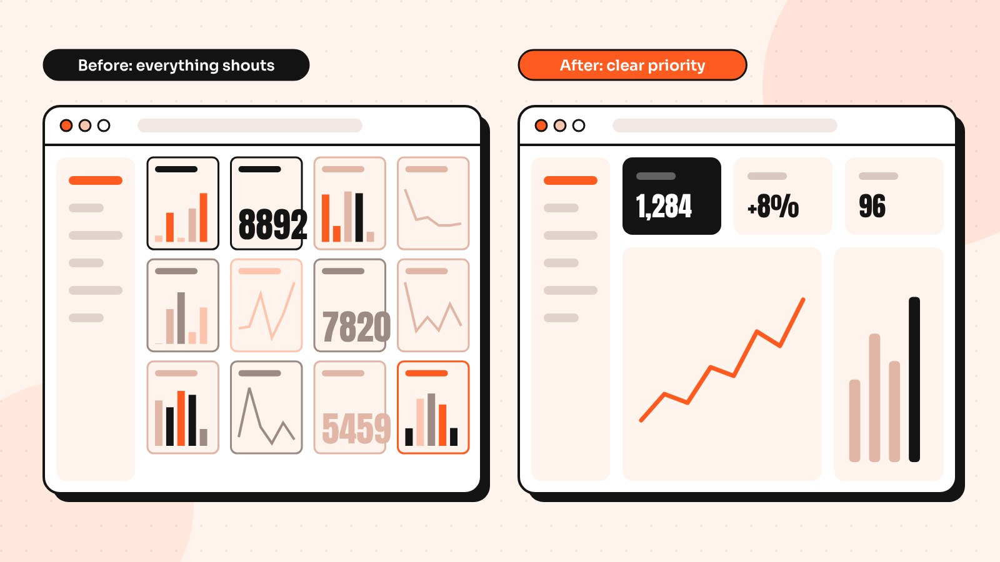
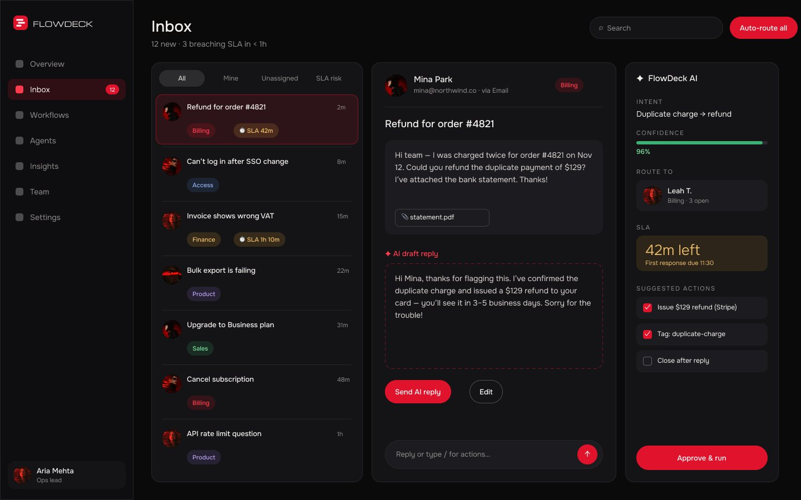

5 Signs Your SaaS Dashboard Is Confusing Users (and How to Fix Them)
Your dashboard can be full of useful data and still leave people lost. These five signs tell you it’s time to simplify, with a fix for each one.

Nobody emails support to say “your dashboard is confusing”. They just stop opening it. Or they export everything to a spreadsheet. Or they ask a colleague every Monday how to find the same report.
Confusing dashboards rarely fail loudly. They fail quietly, in lower engagement and slower adoption. Here are the five signs I look for when a SaaS team asks me to review their product and what usually fixes each one.

1. Users export data to do the real work
If a big share of your users regularly export to CSV, your dashboard isn’t answering their questions. They need to filter, compare or sum something your interface doesn’t support, so they rebuild it in a spreadsheet.
The fix: look at what people do after exporting. Ask a few of them. The answer is usually a missing view, such as a comparison with last month, a grouped total or a saved filter. Building that view into the product keeps users inside it.
2. The same “how do I” tickets keep coming back
Support tickets are free research. If people repeatedly ask where to find an invoice, how to change a date range or what a status means, the interface isn’t making it obvious. Tag these tickets for a month and you’ll have a ranked list of design problems.
The fix: rename labels in the user’s language, move frequent actions to where people look first and add short helper text to anything that needs explaining twice.
3. Every widget looks equally important
When every card has the same size, weight and colour, users don’t know where to look. They scan everything and remember nothing. This is the most common issue I see in dashboards built feature by feature over time.
The fix: decide what users need first each day and make it visibly bigger or higher on the page. Group related numbers, reduce colour to meaning (good, warning, problem) and move rarely used widgets one click deeper.
4. Numbers appear without context
“1,284” on its own doesn’t tell anyone anything. Is that good? Bad? Higher than last week? Users then have to open another page or remember last month’s figure to make sense of it.
The fix: pair key numbers with a comparison, a target or a small trend line. “1,284 active users, up 8% on last week” is something people can act on. Add a tooltip that explains how each metric is calculated.
5. New users see an empty or broken-looking screen
The first time someone logs in, your dashboard is usually empty. If it shows blank charts and zeros, it looks broken and gives no reason to continue. That first impression often decides whether a trial turns into a paying account.
The fix: design the empty state as part of onboarding. Show sample data or a preview, explain what will appear and offer one clear next step, such as connecting a data source. My guide to getting users to their first win faster goes deeper on this.

How to confirm the problem
Before redesigning, collect a little evidence so you fix the right things:
- Check which dashboard elements get clicked and which are ignored
- Watch three to five session recordings of real users
- Ask five customers to complete one common task while you watch
- Review the last month of support tickets for repeated questions
Then apply the basics from my SaaS dashboard design principles: start with the job, build hierarchy and design every state. The broader usability heuristics from Nielsen Norman Group are a good checklist too.
Send me your screens and I’ll show you where users drop off and what to fix first.
Quick answers
How do I know if my dashboard is confusing users?
Common signs include frequent CSV exports, repeated how-to support tickets, low dashboard engagement, users asking colleagues for help and new accounts that never return after their first login.
What makes a SaaS dashboard easy to use?
A clear visual hierarchy, numbers with context such as trends or targets, labels in the user’s language, visible filters and well-designed empty, loading and error states.
Should I redesign my whole dashboard or fix parts of it?
Start by fixing the biggest problems you can prove with data, such as hierarchy and empty states. A full redesign is worth it when the structure no longer fits how customers use the product.